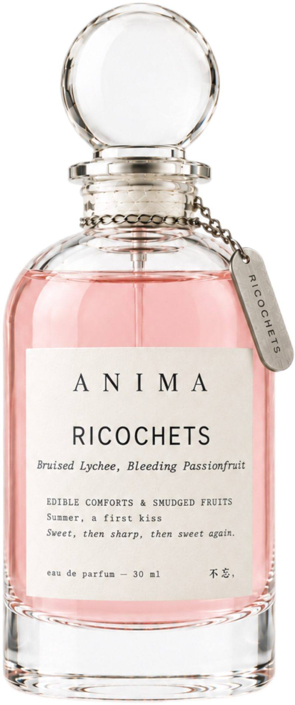

Bruised Lychee, Bleeding Passionfruit
Narrative Story
Every girl remembers her first kiss in ridiculous detail, because the first time it happens, your brain stamps it down hard, and mine is all still there. It was summer, and the air was so humid it sat on my skin like a second shirt, and she was holding a glass of something impossibly bright — passionfruit and lychee, condensation running down her wrist in little rivers — and when she laughed, the ice clinked against the glass, and I thought: I will remember this forever. I tore lychees open with my hands, not cut, torn, and the syrup ran down my wrists while she split a passionfruit and the sharp acid hit straight through the sweetness like electricity. Then we kissed, and the taste was a shock of sweet and tart, and underneath it, her skin, warm and electric and entirely new, and my heart was going so fast I was sure she could hear it. I didn't know then what I know now: that a first kiss is a sniff-test, a primal, ancient way of tasting whether someone is a match. All I knew was that the whole world seemed to swirl and melt away, like a Disney kiss, like the only two people left on earth were me and her and our lips. We laughed after, because first kisses are always a little clumsy, and that laugh is half the memory. The memory is bruised now — lychee and passionfruit, sweet but aching, the way a song you loved at seventeen can still make your chest tighten — and every time I smell that drink, I am nineteen again, and she is just a kiss away.
三、淤青荔枝，流血百香果
那杯东西是她点的。百香果，荔枝，加了很多冰，杯壁上全是水珠，顺着她的手腕往下淌。她喝东西的时候咬着吸管，眼睛看别处。我那时候十九，看她做什么都觉得好看，但嘴上不说。
后来我们接吻了。我记得的其实不是什么浪漫的味道。嘴里是冰的，她刚喝完那杯东西，舌尖上有一点甜，有一点酸，混在一起，说不清是百香果还是她自己的味道。我紧张得忘了闭眼，鼻尖碰到她的鼻尖，凉的。就那一下，脑子是空的。
现在偶尔在菜单上看到百香果荔枝，我会点一杯。喝第一口的时候，冰的还是冰的，甜的也还是甜的，但人已经不在了。那种感觉不是疼，是酸，从牙根后面慢慢泛上来，咽不下去，也吐不出来。
Notes
Profile: Tropical Fruit, Sun-Drenched Green
Top: Pink pepper, Bergamot | Middle: Peony, Jasmine | Base: White musk, Sandalwood
Occasion
Summer, a first kiss.
Ingredients
ALCOHOL ● PARFUM / FRAGRANCE ● AQUA / WATER / EAU ● BUTYL METHOXYDIBENZOYLMETHANE ● LIMONENE ● LINALOOL ● CITRAL ● GERANIOL ● CITRONELLOL ● BENZYL ALCOHOL ● BENZYL BENZOATE ● FARNESOL
Please be aware that ingredient lists may change or vary from time to time. Please refer to the ingredient list on the product package you receive for the most up to date list of ingredients.